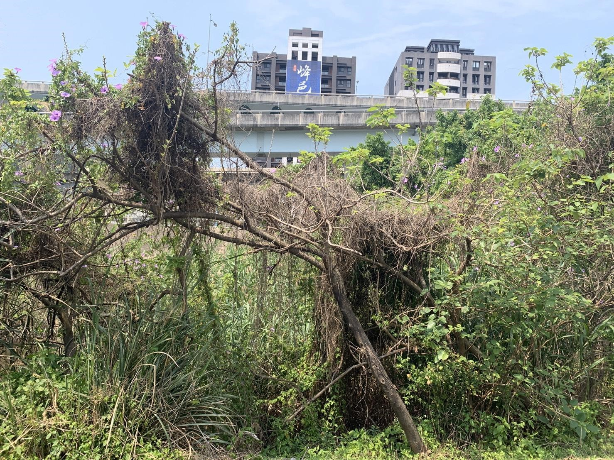
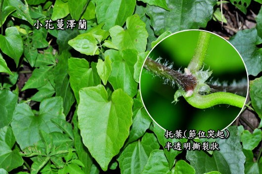
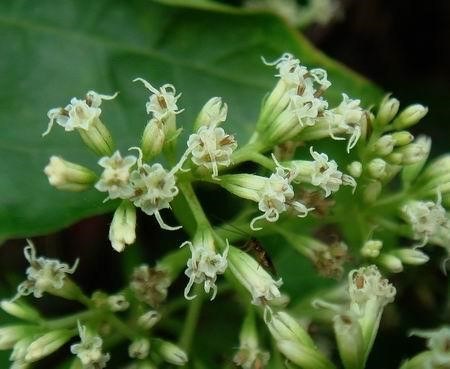
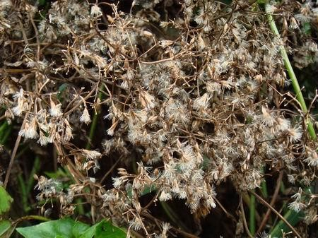
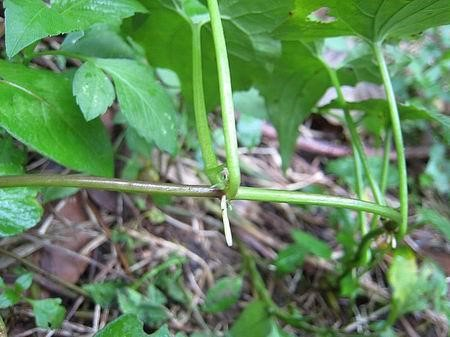

桃二五股溼地任務關卡
by 荒野桃二親子團
任務集
五股溼地
五股溼地
小花蔓澤蘭
植物殺手 - 小花蔓澤蘭
請到地圖上的觀察點 （GPS：25.09794, 121.45176）
找找附近的樹木中，是否有像這樣已經失去生氣的樹木呢? 這棵樹的身上掛著大片藤蔓，遮住了陽光，讓它無法行光合作用，植物就會因此缺少養分，最後枯死。

可以造成這麼嚴重危害的藤蔓植物，就是我們要認識的植物殺手 - 小花蔓澤蘭。
如何找出小花蔓澤蘭呢?

小花蔓澤蘭的葉面像狹長的愛心，也像狐狸臉，很容易辨認。它原生於中南美洲，海拔一千公尺以下，中、低海拔的山野處、廢耕地或乏人管理的果園與檳榔園，都是它可能居住的地方。小花蔓澤蘭會往光照充足的方向生長（趨光性），一攀上樹木就會覆蓋上去，大量生長爭取陽光，結果讓下方的植物無法行光合作用，下方的植物就會因此缺少養分，最後枯死。所以它有「綠色殺手」、「植物殺手」之稱。
沿著這條路往南走，就有機會在路旁的草叢間找到小花蔓澤蘭的蹤跡，可以試著找找看！
繁殖和散佈能力超強的「綠癌」
小花蔓澤蘭在每年的10月到隔年1月開花，

大約於11月中旬，帶有冠毛的種子會開始大量成熟，每平方公尺可產生17萬個種子，它可以輕盈的隨風飄揚，迅速傳播出去。

除了透過種子（有性繁殖）之外，它莖蔓的每個節都可長出新芽，節與節間還能長出不定根（無性繁殖），接觸地面繼續生長。

而且它的生長速度奇快，每天可生長24公分，所以英文稱它為Mile-a-minute Weed（意為一分鐘可生長一英里的野草）。這麼強盛的散布能力和繁殖力，讓小花蔓澤蘭在台灣快速擴散成為不易根除的「綠癌」，威脅當地生態。也被世界自然保育聯盟IUCN列入全球100種最具危害力之外來入侵物種。
為了不讓更多植物受到小花蔓澤蘭的危害，全台各地都有志工號召清除它。五股溼地的工作假期也包含了這項工作。
移除小花蔓澤蘭要注意：
（一） 開花前拔最省事－於每年8-9月進行全面性的切蔓或拔蔓。
（二） 人工拔除最有效－將根部挖（拔）除最安心，攀附在樹體上之藤蔓若無法清除乾淨，則於樹底切斷它離地約二十公分內的莖部，任其懸掛枯萎。
（三）
拔淨裝袋最妥當
－切除或拔除後散落的蔓莖及根部，一定要收集起來、集中至水泥地或空地上曬乾後再予燒燬，或綑紮後置入大袋中統一處理，才不會讓它有機會碰到土地長出不定根，散佈更大！
試試看，哪個時節去清除小花蔓澤蘭，最能有效阻止它繼續蔓延?
1. 每年3～5月（春天）
2. 每年8～9月（開花前）
3. 每年10月～隔年1月（開花期）
4. 每年11月～隔年2月（種子期）
答題囉~
正解： 2. 每年8～9月（開花前）
【說明】趕在開花前清除掉小花蔓澤蘭，可以阻斷它開花授粉、傳播種子的這條繁殖途徑，所以政府訂每年九月為「小花蔓澤蘭防治月」